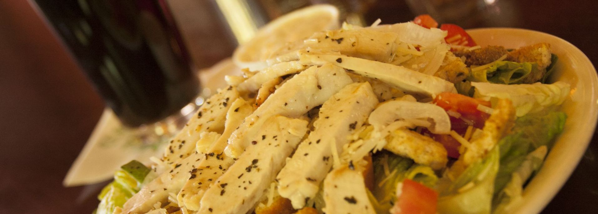

TOSTADA $12 / $14 / $17
Award Winning Tostada Beef layered over House-made Pizza Sauce and Baked with Wisconsin White Colby Cheese, Topped with Freshly Shredded Lettuce, Tomatoes, Wisconsin Cheddar Cheese and House-made Tostada Hot Sauce.
B.L.T. PIZZA $12 / $15 / $18
A Generous amount of Smoked Bacon layered over Salad Dressing, Baked with Wisconsin White Colby Cheese. Topped with Freshly Shredded Lettuce and Tomatoes.
VEGETARIAN $12 / $14 / $17
Tomatoes, Zucchini, Carrots, Onions, Broccoli, Wisconsin Cheddar & White Colby Cheeses, and Garlic Olive Oil layered over House-made Pizza Sauce
GREEK $12 / $15 / $19
Fresh Spinach, Tomatoes, Black & Green Olives, Feta Cheese, Oregano and Garlic Basil Olive Oil layered over Wisconsin White Colby Cheese.
GARLIC CHICKEN $14 / $16 / $19
Tender Chopped Chicken Breast, Broccoli, Basil, Oregano, Garlic Olive Oil layered over Wisconsin White Colby Cheese.
LOBSTER $15 / $19 / $23
A Generous amount of Lobster Sensation, Tomatoes, Parsley, Garlic Olive Oil layered over Wisconsin White Colby Cheese. Served with Lemon Wedges.
PESTO $11 / $14 / $17
A Generous Layer of Basil Pesto topped with Wisconsin Colby Cheese,
Tomatoes, and Feta Cheese.
QUESADILLA $14 / $16 / $19
Tender Chopped Chicken Breast, Green Peppers, Onions, Bacon and Wisconsin Cheddar Cheese layered over Wisconsin White Colby Cheese and our House-made Spicy Aioli Sauce.
BBQ CHICKEN $14 / $16 / $19
Tender Chopped Chicken Breast, Banana Peppers, Sliced Red Onions, and Wisconsin White Colby Cheese layered over Tangy Barbeque Sauce, topped with Wisconsin Cheddar Cheese.
BUILD YOUR OWN
BASIC CHEESE $9 / $11 / $13
Made with our Homemade Thin Crisp Crust
Sausage, Pepperoni, Ham, Smoked Bacon, Anchovies, or Feta Cheese $1 / $2 / $3
Shrimp or Marinated Chicken $3 / $4 / $5
Spinach, Mushrooms, Broccoli, Zucchini, Pineapple, Diced Jalapenos, Black Olives, Green Olives, Tomato, Green Pepper, Onions, Chopped Garlic, or Banana Peppers $1 / $1 / $2
LASAGNA $
Allow 15 minutes
Herbed Ricotta Cheese & our Homemade Italian Meat Sauce layered with Wisconsin Cheddar, Mozzarella, & White Colby Cheese. Served with Garlic Toast.
RAVIOLI small (3) $4
large (5) $8
Italian Beef, Carnalized Onions & Herbed Ricotta Cheese Stuffed Ravioli topped with our Homemade Italian Meat Sauce and Grated Parmesan. Served with Garlic Toast.
SPAGHETTI
small $6
large $6
with savority italian meatballs
small $7
large $10
Slow Cooked Homemade Italian Meat Sauce topped with Grated Parmesan and served with Fresh Baked Garlic Toast.
*meatless sauce available upon request
PESTO $8
Spaghetti tossed with Pesto Sauce, Fresh Spinach, and Sun Dried Tomatoes. Served with Garlic Toast
SPECIALTY $6
Spaghetti mixed with a fresh Olive Oil pan of Garlic, Basil, Tomatoes and Parmesan Cheese. Served with Garlic Toast.
Want to add meat to the Specialty Pasta or Pesto Pasta?
choose from the following:
Sliced Chicken Breast $2
Norwegian Salmon $4
Lobster Sensation $5
Salads can be made with fresh Baby Spinach or Fresh Cut Romaine Lettuce for an additional $2
HOUSE SALAD $4
Fresh Cut Iceberg Lettuce, Tomatoes, Onions, Wisconsin Cheddar Cheese and Croutons.
SIDE CESAER SALAD $5
Freshly Chopped Romaine Lettuce, Croutons, Onions, & Tomatoes topped with Shredded Parmesan Cheese & Caesar Dressing.
Served with Fresh Baked Garlic Toast
CESAER SALAD $7
Freshly Chopped Romaine Lettuce, Croutons, Onions, & Tomatoes topped with Shredded Parmesan Cheese & Caesar Dressing.
Served with Fresh Baked Garlic Toast
add Garlic Herb Grilled Chicken Breast $2
add Wild Alaskan Salmon $4
CHEF'S SALAD $8
Fresh Cut Iceberg Lettuce, Lean Premium Deli Ham, Tender Sliced Whole Turkey, Tomatoes, Onions, Hard-boiled Egg, & Wisconsin Cheddar Cheese.
Served with Fresh Baked Garlic Toast & Choice of Dressing.
GARDEN SALAD (vegetarian) $7
Fresh Cut Iceberg Lettuce, Tomatoes, Onions, Green Pepper, Black Olives, Hard-boiled Egg, and Wisconsin Cheddar Cheese. Served with Fresh Baked Garlic Toast and Choice of Dressing.
TACO SALAD $8
Fresh Cut Iceberg Lettuce topped with our specialty House made Tostada Beef, Wisconsin Cheddar Cheese, Tomatoes, Black Olives and Corn Chips.
Served with Tostada Hot Sauce, Sour Cream and Salsa.
ITALIAN BEEF VINAIGRETTE $8
Fresh Cut Iceberg Lettuce with Thinly Shaved Tender Roast Beef, Italian Green Beans, Onions, Tomatoes and Black Olives. Served with Fresh Baked Garlic Toast and Italian Dressing.
ITALIAN TUNA SALAD $8
Fresh Cut Iceberg Lettuce with chunks or Light Tuna, Onions, Tomatoes, Green Beans, Yellow Wax Beans & Kidney Beans. Served with Fresh Baked Garlic Toast and Italian Dressing.
GREEK SALAD $8
Fresh Cut Iceberg Lettuce with Onions, Tomatoes, Black Olives, Green Peppers, Marinated Cucumbers and Crumbled Feta Cheese. Served with Fresh Baked Garlic Toast and Italian Dressing.
House Dressings (served on the side): Homemade Ranch, Homemade French, Homemade Italian, Caesar, Blue Cheese, Thousand Island, Balsamic Vinegar, Red Wine Vinegar & Oil, and FF Raspberry Vinaigrette.
Ambassador Submarine Sandwiches
Served on our hot, cruty Italian bread.
TRADITIONAL
8 in. $6 / 16 in. $12 / 24 in. $18
Cotto Salami and Bologna, Sliced Wisconsin White Colby Cheese, Tomatoes, Onions, Lettuce and Salad Dressing.
THREE CHEESE
8 in. $6 / 16 in. $12 / 24 in. $18
Fresh Sliced Wisconsin Cheddar & White Colby, with Swiss, Tomatoes, Onions, Lettuce and Salad Dressing.
Ambassador Sub Speciality Sandwiches
Served with Kettle Cooked Chips and a Pickle. All Sandwiches are served on our Hot Crusty Italian Bread (split-top wheat available upon request).
REUBEN $7
Hot Corned Beef, Creamy Swiss Cheese, Zesty Dressing with Spiced Sauerkraut.
YODELER $7
Hot Corned Beef, Shredded Lettuce, and Sliced Tomatoes topped with Zesty Dressing.
ROAST BEEF $7
A Simple Sandwich of Tender Roast Beef served with a side of Au Jus.
YORKSHIRE BEEF $7
Tender Roast Beef with Fresh Sliced Wisconsin Cheddar Cheese and a side of Au Jus.
RACHEL $7
Tender Roast Beef, Creamy Swiss Cheese and Spiced Sauerkraut.
HAM & SWISS $7
Fresh Sliced Premium Lean Deli Ham, Creamy Swiss Cheese, Shredded Lettuce, and Salad Dressing.
CUDIGHI
with House-made Pizza Sauce & Wisconsin White Colby $7 / with Mustard & Onions $7
A Classic Upper-Peninsula version of this traditional Italian Sausage. House-made for over 50 years!
ITALIAN MEATBALL $7
6 Large Savory Meatballs Stewed in an Italian Tomato Sauce, topped with Mozzarella Cheese.
TURKEY $7
Tender Sliced Whole Turkey Breast, Shredded Lettuce and Salad Dressing.
TURKEY DELUXE $7
Tender Sliced Whole Turkey Breast, Shredded Lettuce, Tomatoes, and Zesty Dressing.
MEAT LOAF $6
Homemade with Lean Ground Beef, Served Cold with Lettuce and Salad Dressing.
AMBO MAC $7
Our Famous House-Made Meatloaf warmed in Au-Jus and Served with Lettuce, Tomatoes, Onions, Wisconsin Cheddar Cheese and Zesty Dressing.
TUNA $7
Fresh Made Salad of Celery, Onion, & Tuna with Shredded Lettuce and Salad Dressing.
TUNA SUPREME $7
Fresh Made Salad of Celery, Onion, & Tuna with Shredded Lettuce, Tomatoes, Sliced Wisconsin Cheddar Cheese, and Zesty Dressing.
AMBASSADOR CLUB $7
Tender Sliced Turkey Breast, Lean Ham, Wisconsin Cheddar Cheese, Tomatoes, Lettuce and Salad Dressing.
PESTO CHICKEN $8
Tender Sliced Chicken Breast and Tomatoes baked in Fresh Garlic Olive Oil, topped with Pesto and Romaine Lettuce.
CHICKEN SANDWICH $8
Tender Sliced Chicken Breast Baked in Garlic Basil Olive Oil, topped with Lettuce, Tomatoes, and Salad Dressing.
MEDITERRANEAN CHICKEN
$8 / substitute Norwegian Salmon $10
Tender Sliced Chicken Breast Baked and served with Fresh Spinach, Tomatoes, and Feta Cheese.
25 ounce Spirits.
(Strawberry Daiquiri and Pina Colada have an optional smaller 10 oz.)
PINA COLADA (blended)
25 oz. fish bowl $9 / 10 oz. $4
Rum, Pineapple Juice and Coconut Cream
SCORPION
Exotic Blend of Pineapple and Orange Juice, Gin, Rum and Creme de Almond
PIRATE'S COVE $8
Spiced Rum, Blue Curacao, Lime Juice and Squirt.
AMBASSADOR LONG ISLAND $8
Whiskey, Rum, Vodka, Triple Sec, Lemon Juice and Coke
LONG ALASKAN $9
Whiskey, Rum, Vodka, Triple Sec, Blue Curacao, Coke and Lemon Juice.
FROSTY COOLER $8
Lime Vodka, Gin, Sprite and Lemon Juice.
QUALUDE $8
Vodka, Southern Comfort, Creme de Almond,Triple Sec, Orange Juice and Sprite.
PURPLE RAIN $8
Creme de Almond, Blue Curacao, Rum, Lime Juice and Squirt.
OCEAN BREEZE $8
Rum, Vodka, Triple Sec, Cranberry Juice and Orange Juice.
ZOMBIE $8
Rum, Apricot Brandy, Pineapple Juice
MAITAI $8
Tropical Blend of Rum, Triple Sec, Sugar and Pineapple Juice.
RASPBERRY LEMONADE $8
Whiskey, Triple Sec, Raspberry Schnapps, Sprite and Lemon Juice.
VACATION? $8
Whiskey, Peach Schnapps, Pineapple Juice, and Squirt
SWEET TART $8
Vodka, Blue Curacao, Raspberry Schnapps, Triple Sec, Cranberry Juice, Sprite and Squirt.
STRABERRY DAIQUIRI (blended)
25 oz $9 / 10 oz. $4
Strawberries blended with Rum and Lemon Juice
BLUE HAWAIIAN (blended)
Blue Curacao, Rum, Pineapple Juice and Coconut Cream.
25 oz $9 / 10 oz. $4
BLUE MOTORCYCLE $8
Vodka, Blue Curacao, Triple Sec, Lemon, Lime and Squirt.
CABANA $8
Vodka, Rum, Creme de Banana, Orange Juice, Pineapple Juice, Grenadine
SNAKE JEWELS $8
Vodka, Triple Sec, Amaretto, Lime Juice, Cranberry Juice and Sprite.
FUN ON THE BEACH $8
Raspberry Schnapps, Melon Liqueur, Vodka, Orange Juice and Cranberry Juice.
SUPERIOR TIDE $8
Rum, Blue Curacao, Triple Sec, Melon Liqueur, Lime Juice and Sprite.
TIJUANA TAXI $8
Tequila, Blue Curacao, Triple Sec, Lime Juice and Squirt.
JAMAICAN TEN SPEED $9
Melon Liquer, Coconut Rum, Vodka, Creme de Banana, Pineapple Juice and Milk
CAR CRASH $8
Sloe Gin, Creme de Almond, Southern Comfort, Rum and Sprite.
LYNCHBURG LEMONADE $9
Jack Daniel’s, Triple Sec, Lemon Juice and Sprite.
BULLFROG $8
Southern Comfort, Melon Liqueur, Lemon Juice, Sugar and Squirt.
NACHOS $4
Basket of Corn Tortilla Chips with 8oz Hot Nacho Cheese
Homemade Salsa 8oz $1
Sour Cream 4oz $.80
Jalapenos 4oz $.80
Basket of Chips $2
BAKED POTATO SHELLS $6
Filled with Sautéed Italian Onion Sausage , Wisconsin Cheddar and Parmesan Cheese, Served with Sour Cream.
Allow 15 minutes.
BAKED CHICKEN WINGS $7 (add ranch / blue cheese $1)
Spicy Buffalo Hot Sauce
Allow 15 minutes
FRESH BAKED GARLIC TOAST BASKET $3
House-made Ranch Dressing $1
Slow Cooked House-made Spaghetti Sauce $2
House-made Pizza Sauce $1
SAVORY ITALIAN MEATBALLS
Small (6) $4
Large (10) $7
topped with Shredded Parmesan Cheese and served with House-made Pizza Sauce
BEEF or BEAN TACO
Hard Corn Tortilla $2
Soft Flour Tortilla $3
House-made Tostada Beef, Shredded Lettuce, Wisconsin Cheddar Cheese, Diced Tomatoes, and Tostada Hot Sauce.
BURRITO $4 (add sour cream/nacho cheese $1)
Soft Flour Tortilla filled with House-made Refried Beans and Tostada Beef, Wisconsin Cheddar Cheese, Black Olives and Tostada Hot Sauce.
NACHO GRANDE $8
Our delicious House-made Tostado Beef served on Corn Tortilla Chips and topped with Shredded Cheddar Cheese, Lettuce, Tomato and Black Olives. Served with a side of Hot Nacho Cheese.